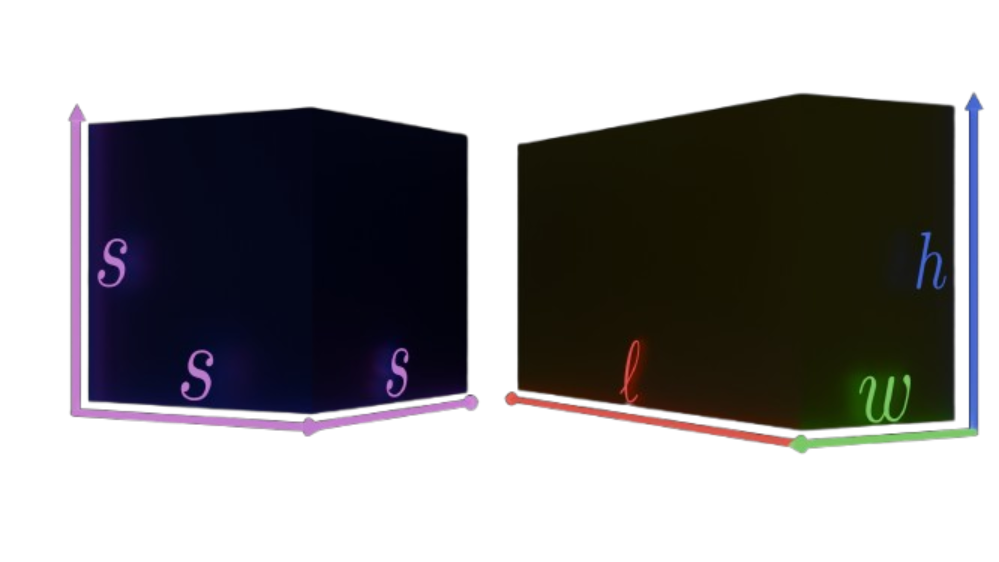
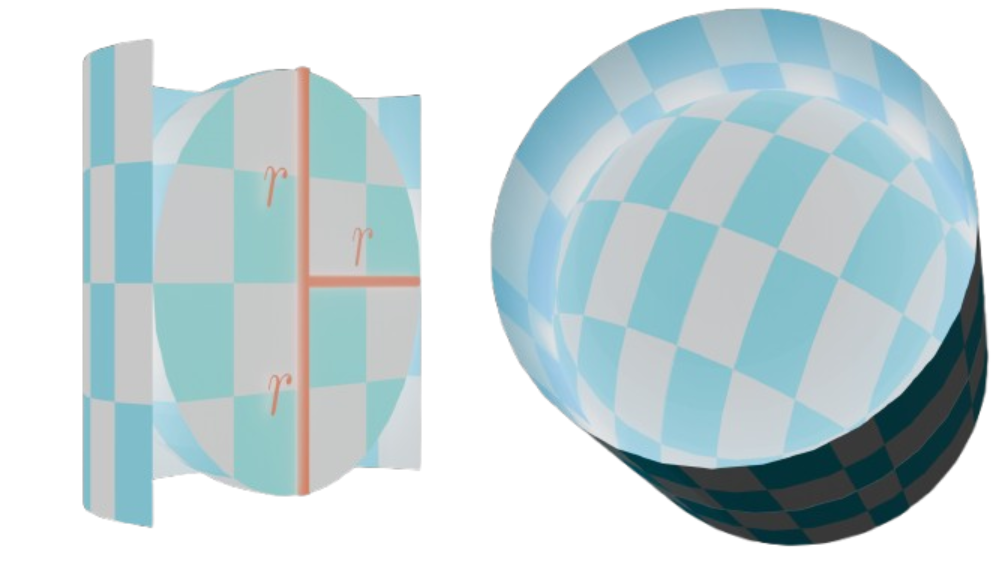
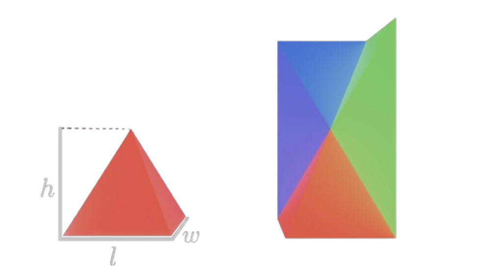
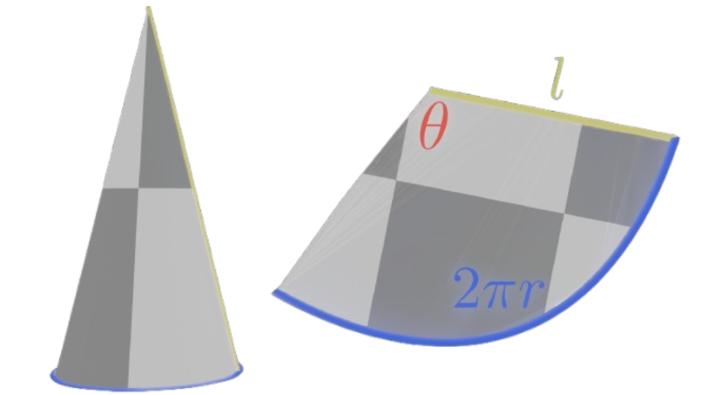

Cube and Rectangle
The number line represents 1D space. The xy-plane represents 2D space.
Add one more number line in the z direction to get 3D space. In this space we have three coordinates:
(x | y | z), with their respective x-, y- and z-axis. On top of length and width we also have height,
combining the three to get volume. The formulas for the volume of a cube and rectangular prism extend simply
into three dimensions: For a cube of side length s its volume \(V = s^3\).
For a rectangular prism with length \(\ell\), width w and height h it's volume \(V = \ell \cdot w \cdot h\).
Example: A cube with a side length of 4cm is connected to a rectangular prism with a length of 10cm, width
of 5cm and height equal to that of the cube. Find the volume of the entire shape.
Solution: The volume of the cube is: \(V_C = (4cm)^3 = 64cm^3\). The rectangular prism has a height of 4cm, so
its volume is: \(V_R = 10cm\cdot 5cm\cdot 4cm = 200cm^3\). Finally, adding these two up we get the volume
of the whole shape: \(V = V_C + V_R = 200cm^3 + 64cm^3 = 264cm^3\).
From 2D to 3D area turns into volume, and perimeter turns into surface area. To compute the surface area simply
find the area of each side of a shape and then add them up. Since the area of a side of a cube with sidelength
s is \(s^2\), and a cube has six sides then the surface area of a cube is: \(S = 6s^2\).
Same with a rectangular prism, except it has 2 sides each which are the same, 3 diffent pairs of sides,
so the formula for it is: \(S = 2(\ell\cdot w + \ell\cdot h + w\cdot h)\).
Circles have two main ways of extending to three dimensions: Spheres and cylinders, for which we also have formulas for their volume
and surface area. The volume of a cylinder is the area of its base times the height of the cylinder, so
\(V = \pi r^2h\).
The surface area of a cylinder is simply the area of its top and bottom face and
the surface area of its sheath/covering/lateral surface. The perimeter for its lateral surface is \(2\pi r\), so when we multiply it with the height
of the cylinder, and add the top and bottom face, we get that the surface area of a cylinder is:
\(S = 2\pi rh + 2\pi r^2\).

Intuition for the surface area of a sphere.
Example 2: Find the volume of a cylinder of height 40mm and diameter 14mm.
Solution: The radius is 7mm, so the volume is \(V = \pi (7mm)^2 \cdot 40mm = 1960\pi \: mm^3 = 1.96\pi \: cm^3\).
Example 3: A can of coke can be modelled by a cylinder of height 15cm and diameter 8cm. Find its surface area in dm.
Solution: \(S = 2\pi (4cm)(15cm) + 2\pi (4cm)^2 = 120\pi cm^2 + 32\pi \: cm^2 = 152\pi \: cm^2 = 1.52\pi dm^2 \approx 4.78dm^2\).
From here on we will encounter formulae that I won't prove for a while until we get to higher tiers
so you will just have to take my word for them. Still, I can give you an intuitive reason for the formula
of the surface area of a sphere. Stretch the "tips" of a sphere out to form it into a cylinder. Then, we'd have a
cylinder with height of the diameter of the sphere and radius of the radius of the sphere. Therefore, the
surface area of a sphere is the same as the surface area of the lateral surface of this cylinder, which is \(2\pi r \cdot 2r\). So,
the surface area for a sphere is \(S = 4\pi r^2\).
The formula for the volume of a sphere is: \(V = \frac{4}{3}\pi r^3\).
Example 4: Find the surface area and volume of a sphere with radius of 1m. Convert your answers to dm.
Solution: \(S = 4\pi (1m)^2 = 4\pi m^2 = 400\pi dm^2\). \(V = \frac{4}{3}\pi (1m)^3 = \frac{4\pi}{3}m^3 = \frac{4000\pi}{3}dm^3\).

Visual proof for the volume of a pyramid
Last two shapes we're going to investigate are pyramids and cones.
Regular pyramids are pyramids with a regular shape as a base and their height located above the crossing point of the
diagonals of the base/the center of the base. We will only be looking at pyramids with a rectangular base, so rectangular pyramids.
The defining sizes of a rectangular pyramid are: \(\ell\), the length of the base rectangle, w, the width of the base rectangle, h, the height of the apex of the pyramid,
l, the slant length, so the length along the bent triangles coming towards the apex, V, the volume and S, the surface area.
The volume of a pyramid is one third of the rectangle with base and height the same as the pyramid, so
\(V = \frac{1}{3} B \cdot h\).
The base is simple to calculate, since it is simply a rectangle. For a square rectangle the slant lengths are the same for all the sides,
for a rectangular pyramid there are two slant lengths, which can each be figured out using the Pythagorean theorem.
Then, the surface area of a rectangular pyramid is the base + the surface of each of the upwards-facing sides, which are
triangles, so their respective slant length l, times their base b over 2.
\(S = \ell \cdot w + \ell \cdot l_1 + w\cdot l_2\).
A square pyramid is a special case of the rectangular pyramid where the length is the same length as the width.
Example 5: The Great Pyramid of Giza can be modelled as a square pyramid with a base of sidelength 230m and a height of 139m.
Find the volume as well as the surface area of the pyramid.
Solution: \(V = \frac{1}{3} (230m)^2 \cdot 139m \approx 2451033.33m^3 = 2.45 \cdot 10^6 m^3.\)
The slant length is the same for every side, which can be calculated as \(l^2 = h^2 + (\frac{s}{2})^2\),
which in our case is \(l^2 = (139m)^2 + (\frac{230m}{2})^2 = 32546m^2 \to l \approx 180.4m\). The
surface area for a square pyramid \(S = s^2 + 2\cdot l\cdot s\), so
\(S = (230m)^2 + 2\cdot 230m \cdot 180.4m = 135884m^2 = 135.88 \cdot 10^3 m^2\).

Surface area of a cone
For a cone, the volume is one third the volume of a cylinder of the same radius and height, so
\(V = \frac{1}{3}\pi r^2 h\). The surface area of a cone is equal to the
circular base plus the lateral surface. If we unroll the lateral surface then it's a circle sector with
and arc of 2\(\pi r\), since that's the perimeter of the base of our cone, and a radius of \(l\), therefore our
angle is \(\theta = \frac{2\pi r}{l}\) so then the area of the sector is equal to the
lateral surface area of the cone: \(S_{LAT} = \frac{1}{2}(l)^2 \cdot \frac{2\pi r}{l} = \pi r l\), so
we finlly get the surface area of a cone: \(S = \pi r^2 + \pi r l\).
\[
Table \:\: of \:\: formulae\\
\begin{array}{|c|c|}
\hline
Volume & Surface \:\: Area \\
\hline
V_{Cub} = s^3 & S_{Cub} = 6s^2 \\
V_{Rec} = \ell \cdot w \cdot h & S_{Rec} = 2(\ell \cdot w + \ell \cdot h + w \cdot h) \\
V_{Cyl} = \pi r^2 h & S_{Cyl} = 2\pi r(h + r) \\
V_{Sph} = \frac{4}{3}\pi r^3 & S_{Sph} = 4\pi r^2 \\
V_{Pyr} = \frac{1}{3}B\cdot h & S_{Pyr} = \ell \cdot w + \ell + l_1 + w \cdot l_2 \\
V_{Con} = \frac{1}{3}\pi r^2 h & S_{Con} = \pi r(r + l) \\
\hline
\end{array}
\]
You should know the first four formulae from this table, while for the pyramid and cone remember that the volume is
simply one third of the base and height, where for the cone the base is a circle.
The more you work with this the more integrated the formulae will be in your mind, so most crucially understand why
these formulae are the way they are and how to derive them. Also note that, obviously, this table doesn't list the formulae
for 2D shapes.